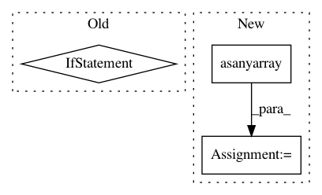

3e38fe09a87e6ef05289f3cbe6ffa03e2dc716e8,metric_learn/rca.py,RCA,fit,#RCA#Any#Any#,78
Before Change
inner_cov = np.cov(chunk_data, rowvar=0, bias=1)
rank = np.linalg.matrix_rank(inner_cov)
if rank < d:
warnings.warn("The inner covariance matrix is not invertible, "
"so the transformation matrix may contain Nan values. "
"You should adjust pca_comps to remove noise and "
"redundant information.")
// Fisher Linear Discriminant projection
dim = self._process_parameters(d)
if dim < d:
total_cov = np.cov(data[chunk_mask], rowvar=0)
tmp = np.linalg.lstsq(total_cov, inner_cov)[0]
After Change
data, M_pca = self._process_data(data)
chunks = np.asanyarray(chunks, dtype=int)
chunk_mask, chunked_data = _chunk_mean_centering(data, chunks)
inner_cov = np.cov(chunked_data, rowvar=0, bias=1)
dim = self._check_dimension(np.linalg.matrix_rank(inner_cov))
In pattern: SUPERPATTERN
Frequency: 3
Non-data size: 3
Instances
Project Name: metric-learn/metric-learn
Commit Name: 3e38fe09a87e6ef05289f3cbe6ffa03e2dc716e8
Time: 2017-03-02
Author: perimosocordiae@gmail.com
File Name: metric_learn/rca.py
Class Name: RCA
Method Name: fit
Project Name: metric-learn/metric-learn
Commit Name: 85185175f356697f4a91feacaed2d3a9d70af95f
Time: 2019-06-12
Author: 31916524+wdevazelhes@users.noreply.github.com
File Name: metric_learn/rca.py
Class Name: RCA
Method Name: fit
Project Name: scikit-image/scikit-image
Commit Name: f893d1ff125b6b9990a20382aabcbe6ab15ea8f0
Time: 2018-02-04
Author: alvn.zng@gmail.com
File Name: skimage/io/_io.py
Class Name:
Method Name: imsave